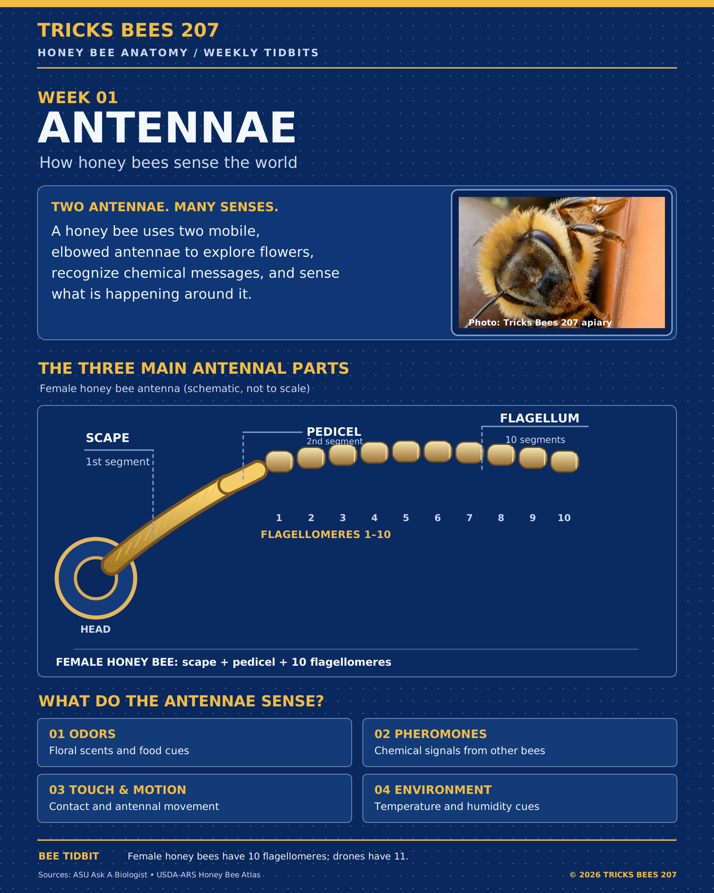

What do a honey bee's antennae do?
Honey bees use their antennae to detect floral odors and pheromones, feel contact and movement, and sense changes in their environment. Each antenna has three main parts:
- Scape: the long first segment attached to the head.
- Pedicel: the second segment at the elbow, containing Johnston's organ, which detects antennal movement.
- Flagellum: the outer segmented portion, with ten flagellomeres in female honey bees and eleven in drones.
Bee tidbit: The antennae help bees gather information about a flower before they collect food.
Sources: Arizona State University, Ask A Biologist and USDA-ARS, Atlas of the Honey Bee.